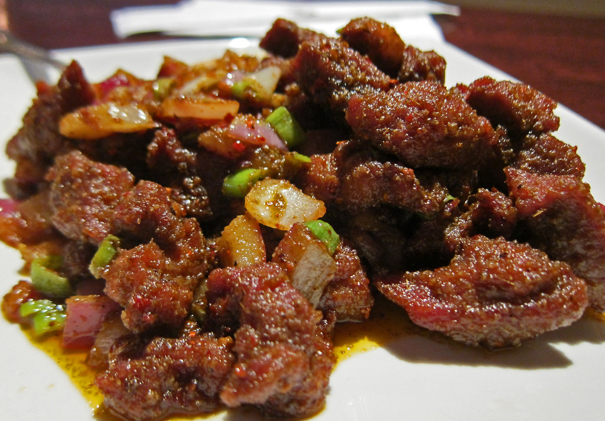

Cumin Lamb

Lamb leg thin sliced, stir-fryed with cumin, sichuan peppercorn, ginger, and garlic.
Ingredients
- 0.5 pound of lamb leg
- Half a whole yellow onion
- 4 Cloves of garlic
- 0.5 inch of ginger
- 1 spring of cilantro
- 2 TBS of half ground cumin
- 1 TBS of sichuan peppercorn
- 1 TBS of korean red pepper powder
- 0.5 Tsp of sugar
- 1 Tsp of salt
- 1 TBS of rice wine
- 1 TBS of Soy Sauce
- 1 TBS of cooking oil
Steps
- Slice the lamb leg into thin slices
- Marinate in a bowl with rice wine and soy sauce for 30 mins
- Mince the garlic and ginger
- Cut the onion into slices
- Cut the cilantro into half inch sections
- Mix in a small bowl the cumin, sichuan peppercorn, red pepper powder, and sugar
- Heat up and skillet and add oil
- Add in the ginger and garlic and stir fry until fragrant
- Add in the lamb and stir fry until cooked
- Add the salt and spice mixture
- Mix together well and serve
Home